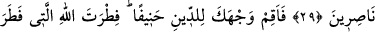

ALLÂH’IN YARATIŞINDA
DEĞİŞME YOKTUR
28. Allah size kendinizden bir temsil getirmektedir: Mülkiyetiniz altında bulunan
köleler içinde, size verdiğimiz rızıklarda -birbirinizden çekindiğiniz gibi
kendilerinden çekineceğiniz derecede sizinle eşit (haklara sâhip)- ortaklarınız var
mı? İşte biz âyetlerimizi, aklını kullanacak bir kavim için böylece açıklıyoruz.
29. Gel gör ki haksızlık edenler, bilgisizce kötü arzularına uydular. Allâh’ın
saptırdığını kim doğru yola eriştirebilir? Onlar için herhangi bir yardımcı yoktur.
30. (Rasûlüm!) Sen yüzünü hanîf olarak dîne, Allah insanları hangi fıtrat üzere
yaratmış ise ona çevir. Allâh’ın yaratışında değişme yoktur. İşte dosdoğru din
budur; fakat insanların çoğu bilmezler.
31. Hepiniz O’na yönelerek O’na karşı gelmekten sakının, namazı kılın;
müşriklerden olmayın.
32. Dinlerini parçalayan ve bölük bölük olanlardan (olmayın. Bunlardan) her
fırka, kendilerinde olan ile böbürlenmektedir.
Ey Allâh’a ortak koşanlar topluluğu! “Allah size kendinizden” şirkin bâtıl olduğunu
açıklayan, yâni işlerin size en yakını ve sizce en çok tanınanı olan kendinizin
hallerinden alınmış “bir temsil getirmektedir:” Putları Allâh’a ortak edinme konusunda
hâlinizin neye benzediğini size açıklamaktadır:
(Dirhem darbedilirken) çekiçle vurulması dikkate alınarak “
” denir.